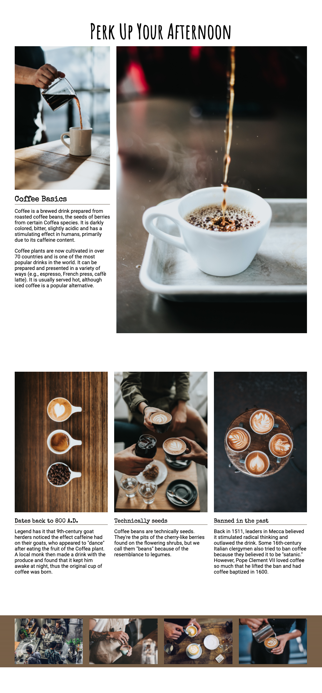

Frontend Development
Mobile-first Development
overview: A mobile-first approach involves desinging the mobile version of a website first, and then adapting the display to larger screens like a desktop.
terms:
Graceful degradation: a desktop-first approach that involves designing the web page layout for larger screens, then adding media queries to remove features and rearrange elements to fit a smaller screen
Progressive enhancement: a mobile-first approach that involves designing for the smallest screen first, the progressively adding features and rearranging the layout to take advantage of larger screen sizes
Viewport: the area of a browser's window in which web content can be screen
Run frontend foundations starter repository
cd out of readings and into dothis
then code starter-front-end-foundations-main
The files for this lesson are stored in the mobile-first-development folder; open the index.html file with vscode live server
Mobile-first Development
There are two approaches to media queries:
Graceful degradation: considered the old way of creating responsive websites
Progressive enhancement: preferred method
Progressive enhancement ensures that there is a good enough user experience on al screens.
Viewport
meta tag
The viewport is the area of a browser's window in which web content can be seen.
The viewport meta tag lets you control the way that your pages are scaled when rendered by the browser.
For this meta tag to display the website properly on all devices, you need to add initial-scale=1. When the initial scale is set to 1, it keeps the same zoom scale. This presents the text much better as web pages change between vertical and horizontal views.
Responsive images
You can set all the image widths to 100% using css, and the images will match whatever container width that they are placed within.
Run index.html in the responsive-images folder
img {
width: 100%;
}
This code sample targets all the images within the .group container to display at 100%.
If you don't want to force the 100% resizing of every image, you can be more selective in how you target your images.
Add the code below to the style.css sheet
main img {
width: 100%;
}
This will code will not actually show a visual difference between using img and main img, because they both target the same images on the page.
With this change you can see Group 1 and 2 align properly but group 3 does not. This is because of size ratios.
When the images aren't the same height and width (in other words, when they have different ratios), they won't display properly.
To get these images to align properly, you need to crop them so that they all have the same ratio.
Adobe photoshop is used by most designers to edit images. But there are also alternative apps online that make this process easy.
BIRME can help if you find that you need to resize images for your own projects.
https://www.birme.net/
Practice exercise
